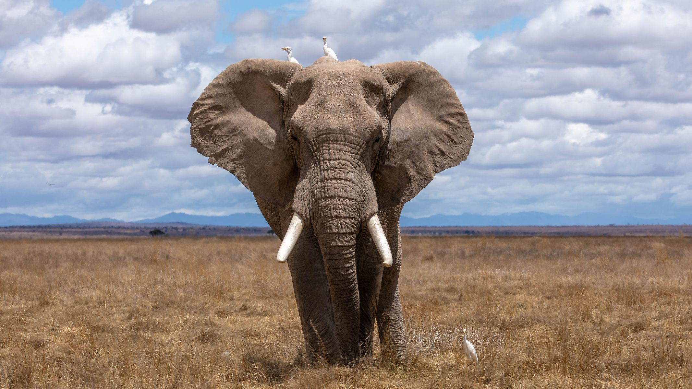
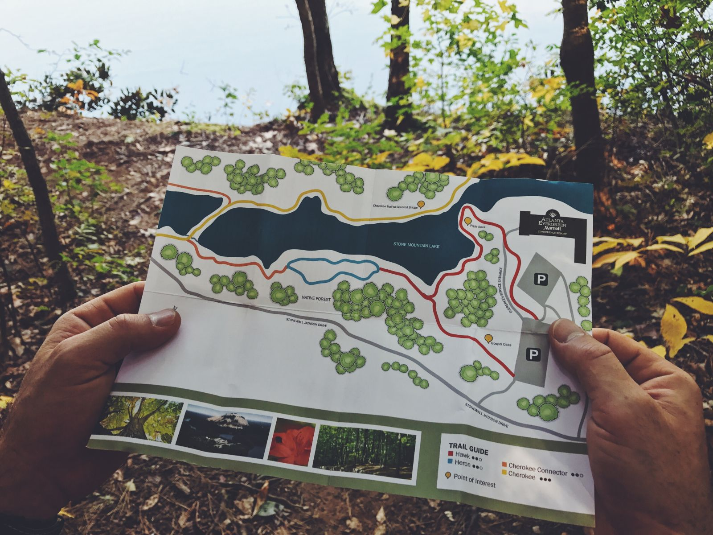
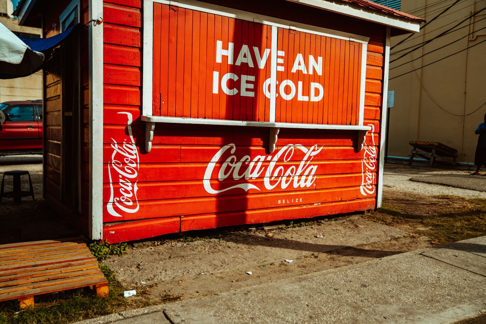

Connect with animals by going on a tour of the park. This tour will take you outside the confines of our extensive trail system as you get to visit the rest of the sanctuary in an open-air vehicle that allows visitors to interact with certain animals.
Mon-Fri
9am-2pm
Sat & Sun
9am-5pm
Register for a tour by visiting our contact page and filling out the form. Our tours may fill up, and it is recommended to sign up far in advance so that you don't miss out on our wonderful animal tour! Depending on the day, limited seating might be available on a tour, and in that case our policy is first come, first serve. We hope you enjoy your visit to Tufts Animal Sanctuary and hope you sign up for the park tour!
Explore over 5 miles of trails at Tufts Animal Sanctuary. Discover the far reaches of our trail systems and visit our different animals across the park.
Length: 0.6 miles
Details: The Bridge Trail takes you through Uakari exhibit, as well as visits Zonkeys, and while on the bridge that the trail is named after you should be able to see the lions off in the distance.
Length: 1.1 miles
Details: The Heartwood Trail branches off from the Bridge Trail, and visits the squirrels and tuna. Most of the Heartwood Trail is not near the animals, but instead takes visitors through our beautiful forest, and passes by a river before eventually connecting with the Jumbo Trail.
Length: 0.8 miles
Details: The Jumbo Trail takes visitors through the Elephant exhibit, and also goes by the rabbits. The elephants are the main attraction of the Jumbo trail, and if you are lucky enough to visit during feeding hours, you might even get to help feed an elephant!
Stop by our snack shack to grab a bite to eat inbetween visiting our wonderul animals! Whether you're looking for just a snack or a full meal, we have exactly what you need to keep you fueled up for the rest of the day! See below for our hours of operation.
Mon-Fri
8am-4pm
Sat & Sun
8am-6pm
The snack shack is located to the right of the main entrance and is visible immediately once you enter the park. Visitors are given a $5 voucher towards the snack shack with admission.